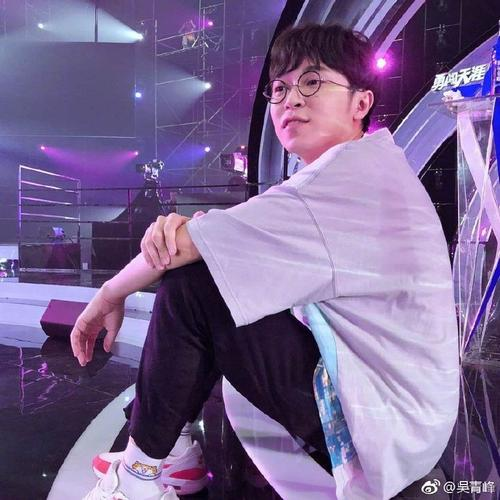

张熙烨
一个80后草根女站长！Web前端设计师、网页设计师。
欢迎您，来到我的个人博客，你，我生命中一个重要的过客，我们之所以是过客，因为你未曾会为我停留。
内心独白
我叫杨青青，我是一个80后草根女站长！09年入行。我一直潜心研究网页前端技术，一边工作一边积累经验，分享一些个人博客模板，以及网站优化等心得。我入行早，大家也亲切的叫我“青姐”。我的个人博客搜索“个人博客”、“博客”，一直都靠前。最有意思的是，我有三年的时间没有去更新它，依然排在前面。虽然期间有很多的不容易，但是我都没有放弃过。选了这一行 ，就深深的喜欢上它。我喜欢一句话“冥冥中该来则来，无处可逃”。我喜欢上了前端设计，喜欢坐在电脑前敲代码，喜欢跟一堆程序员聊天。这辈子，我也逃不出去了，深深的陷了进来。